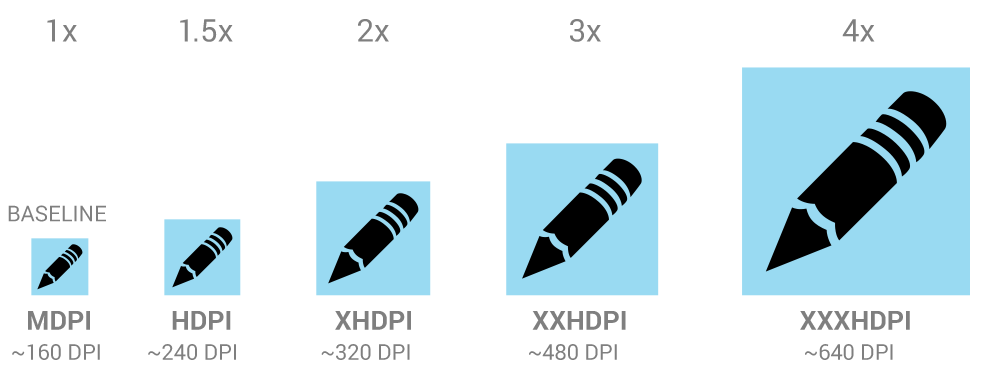

图标是在屏幕中占据很少位置的用以快速直观的表示动作、状态或应用的的图形。
当你在为你的应用设计图标的时候，请切记你的应用可能会被多种多样的设备安装，正如设备与显示中提到的那样，你需要提供一个像素密度范围。但是你可以通过提供多种图标尺寸来使你的图标在所有的设备上看起来都很棒。当你的应用实际安装和运行的时候，安卓为检查设备的屏幕属性并加载适当的图标。
正因为你将会为每个图标提供多种尺寸以支持不同的屏幕，下面的参考图示尺寸以 dp为单位，基于中密度 (MDPI) 屏幕的尺寸。
因此要创建适用于不同屏幕密度的图标，你应该在五种主要密度（分别是 medium, high, x-high, xx-high, and xxx-high）中都遵循2:3:4:6:8缩放比例。举例来说，考虑一个48x48 dp 大小的启动器图标这意味着基准（MDPI）资源大小为 48x48 px，高密度（HDPI）资源应该是1.5倍于基准大小，这样大小为72x72 px，而特高密度（XHDPI）资源应该2倍于基准大小，这样大小为96x96 px，其它屏幕密度资源大小以此类推。
提示：虽然安卓也支持低像素密度（LDPI）的屏幕，但无需为此费神，系统会自动将 HDPI 尺寸的图标缩小到 1/2 进行匹配。
启动器图标
启动器图标在“主屏幕”和“所有应用”中代表你的应用。因为用户可以设置“主屏幕”的壁纸，所以要确保你的启动图标在任何背景上都清晰可见。
大小和缩放
尺寸
样式
使用一个独特的剪影。三维的正面视图，看起来稍微有点从上往下的透视效果，使用户能看到一些景深。
操作栏
操作栏图标是一个图像按钮，用来表示用户在应用中可以执行的重要操作。每一个图标都使用一个简单的隐喻来代表将要执行的操作，用户应当一目了然。
应当用预定义的形状来表示一些确定的通用操作，例如“刷新”和“分享”。 下载链接提供了一个图标包，其中的图标可以缩放到多种屏幕分辨率，并且适合于浅色和深色的 Holo 主题。图标包中还有没有样式化的图标，可以和你自己的主题搭配，并且提供了 Adobe® Illustrator® 源文件，你可以自己修改。
大小和缩放
焦点区域与尺寸
样式
使用象形的、扁平化的、没有太多细节的，圆滑的弧线或者带角的形状。如果图形太窄了，那么向左或向右旋转 45° 来填满图形区域。最细的笔画不应小于 2dp。
颜色
颜色：#333333
启用：不透明度60%
禁用：不透明度30%
颜色：#FFFFFF
启用：不透明度80%
禁用：不透明度30%
小图标和上下文图标
在应用的主体区域中，使用小图标表示操作或者特定的状态。例如在 Gmail 应用中，每条信息都有一个星型图标用来标记“重要”。
大小和缩放
焦点区域与尺寸
样式
中性、扁平和简单。最好使用填充图标而不是细线条勾勒。使用简单的视觉效果，使用户容易理解图标的目的。
颜色
默认情况使用中性颜色。例如在 Gmail 应用中，使用黄色的星型图标表示重要的信息。如果图标带操作，使用和背景色形成对比的颜色。
通知栏图标
如果你的应用会产生通知，提供一个图标给系统显示在状态栏上，表示有一条新的通知。
大小和缩放
焦点区域与尺寸
样式
使用简单的平面的图标，应当和应用的启动图标视觉上相似。
颜色
通知单图标必须全是白色的。另外系统可能会将图标缩小或者将图标颜色变深。
设计小技巧
以下这些小技巧可能对你创建图标或其他图片资源有所帮助。这里我们假定你也使用诸如 Adobe® Photoshop® 这类的位图或矢量图编辑程序。
尽可能使用矢量图
Adobe® Photoshop® 这类图像编辑工具运行用户混合使用矢量图和位图。尽可能的使用使用矢量图，这样在需要放大图标时就可以避免细节上的损失。
使用矢量图的另一个好处是为能更方便的为像素密度低的屏幕剪裁图标元素。
从大的画布开始
为了更好的适配不同的像素密度，最好使用数倍于目标图标尺寸的画布。例如，启动图标在 MDPI、HDPI、XHDPI 和 XXHDPI 下的宽度为 48、72、96 和 144 px。如果你一开始就使用 864x864 px 大小的画布画启动器图标，那么可以降低缩放图标时的工作量。
缩放时，按需重绘位图图层
如果需要放大的图标中包含位图图层，这些图层需要进行手动重绘，以便在更高的像素密度下获得更好的显示效果。例如，为 MDPI 所绘制的 60x60 px 的圆，在适配 HDPI 屏幕时需重绘成 90x90 px。
图标命名约定
遵守一定的图标命名约定有助于图标文件的管理。我们可以为不同类型的图标指定不同的命名前缀：例如：
| 资源类型 | 前缀 | 例子 |
|---|---|---|
| 图标 | ic_ |
ic_star.png |
| 启动器图标 | ic_launcher |
ic_launcher_calendar.png |
| 菜单图标和操作栏图标 | ic_menu |
ic_menu_archive.png |
| 状态栏图标 | ic_stat_notify |
ic_stat_notify_msg.png |
| 选项卡图标 | ic_tab |
ic_tab_recent.png |
| 对话框图标 | ic_dialog |
ic_dialog_info.png |
注意你不是必须使用这样的前缀 - 这样做只是为了方便。
按像素密度对图标进行归档
支持多像素密度意味着同一图标会有不同的版本。为了方便管理，我们建议按照像素密度对相应的图标文件进行归档保存。例如：
art/...
mdpi/...
_pre_production/...
working_file.psd
finished_asset.png
hdpi/...
_pre_production/...
working_file.psd
finished_asset.png
xhdpi/...
_pre_production/...
working_file.psd
finished_asset.png
xxhdpi/...
_pre_production/...
working_file.psd
finished_asset.png
这一归档方式与应用内保存图标文件的方式相似，可以方便的进行文件复制。此外由于不同像素密度下的同一图标文件必须使用同一个文件名，借助这一归档方式我们可以方便的检查文件命名的一致性。
作为参考，这里也给出应用内保存图标文件的方式：
res/...
drawable-ldpi/...
finished_asset.png
drawable-mdpi/...
finished_asset.png
drawable-hdpi/...
finished_asset.png
drawable-xhdpi/...
finished_asset.png
关于应用内资源文件保存方式的更多内容，参见资源提供。
删除最终版本中无关的元信息
虽然安卓 SDK 工具在打包应用时会自动压缩 PNG 文件，我们应该养成删除无关元信息的良好习惯。借助 OptiPNG或Pngcrush这样的工具，可以实现元信息删除和文件尺寸压缩这样的操作。